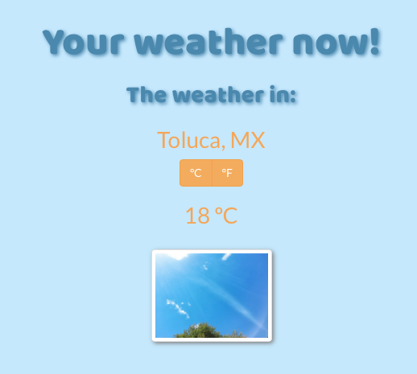

Marco Galvan
Creative Engineer
I'm an electronics engineer with a focus in audio, music and web development. You could say I am a technology lover who combines of all of these disciplines.
Portfolio



I'm an electronics engineer with a focus in audio, music and web development. You could say I am a technology lover who combines of all of these disciplines.